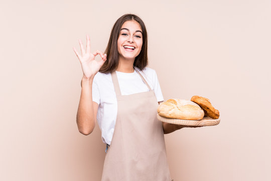

Quiénes somos
Somos una empresa nacida en un hogar tabasqueño en octubre de 2023. Se podría decir que todo comenzó cuando nuestra fundadora no pudo encontrar una galleta de macadamia que le gustara lo suficiente, así que decidió hacerla ella misma, pero la realidad es que esto es el resultado de muchos años de coquetear y experimentar con la repostería.
